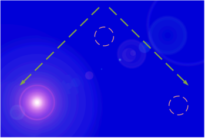

| Start time | Expected observation |
|---|---|
| 00:00:00:02 | A series of three image subtitles appears: a ‘sun’ moving from left to right in the pattern shown below, then
returning, and then back down again (over approx. 1 second).  The sequence repeats without pause three times. Overall, the change in positioning is even, without skips in the sequence. |